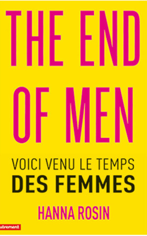
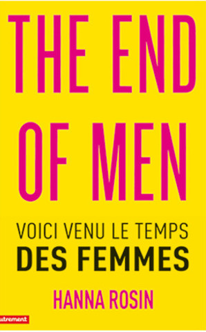
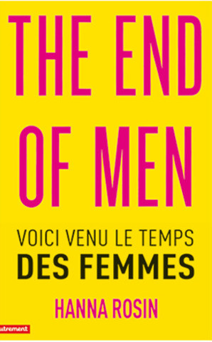
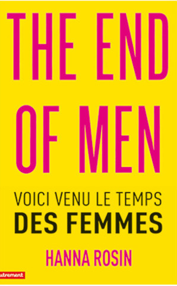

Greetings from Below. We made Nordic names to appear more white, more assimilated, more stylized like IKEA furniture tags. it was only natural this would be the next step to fame and excellence. We were tired of the powerlessness of creating, then critiquing culture. Artists might as well be artisans or court jesters, or even better, digital prophets and trend forecasters. We needed a change of life Style. And this would be activated by an inaugural Scandinavian name change. Race and ethnicity are social construct anyway. It's the thought that counts.
Intellectuals call what we have "social capital", but we know, at best, it's just a fine balance of showmanship and passion. Realizing we were failures at climbing the social ladder, we stayed up late reading guides on how to become dismissive and charming, high functioning sociopaths. We gave each other papercuts, stole from stores, lied and cheated to our loved ones and talked shit about our enemies. We knew whatever we were doing was going to be a drop in the ocean. Phrased the right way, anything can be easily painted as a disaster. And there's tons of money to be made from disaster. This was is just one of a million emergencies–the quest for productive mediocrity. We are Russian metro dogs on the run, sniffing our way through the city, while taller humans look on with disgust and amusement. Disgruntled and powerless young folk turn into old men yelling at clouds.
Gen Y's growing pains are slowing down the economy. No one wants to work harder for less money. No one wants to undersell for professional titles and sexy results. Entitled, overeducated, ambitious, competitive, ingrateful, idealistic, class-fluid, MacBook-touting imbeciles. Too inexperienced with life to make any insightful statements. How to appease our young and upcoming minds after the crisis of capitalism? You're looking for freedom; I'm looking at money.

Svea Holloway. A familiar stranger with hypnotic seduction. Looking for love from Chicago to Paris. Her strengths are roses, poetry, noise music, the French New Wave, and endless rope for mean men. No fats, no feemes... just kidding! Thou shalt not seek drugs. Yet if they are there, drugs seem to do her. Svea knows how to take you to the moon and back. She's making a list and checking you out twice. A smooth and supple liquid containing cherry and chocolatey aromas. Baby you're a song, you make me want to roll my windows down, and cruise.

Göran Jacotey has a heart of gold. Candy hearts and flawness nails never hurt anyone! He is sweet and saccharine like iced tea on a summer's day. Goran knows romance is rare, so pick your petals slowly. When he dips you dip, then we dip. With the right attitude, you can pull off any pattern. Blues, greens, and pinks. I am on fire. Sashay away. On the search for an undiscrete femme companion: beauty queens, peach blossoms and drag knights. Where there is a will there is Göran.

Pappa Modig (White Mage, human) is an orphan who was raised by several IT service desk clerks in Northwest Sweden. This is why he has a flair for tech talk and geekspeak, and has +30% +1d6 to all attempts on help desk calls. Pappa is equipped with the Ring of Relativity (Protection from Careerism, +10 to cocktail talk), and Sony Xperia Z3 mobile phone. They have huge bonuses for all saving throws when needed to escape an opening party. Alas, Pappa can't really handle drugs or druggy socializing due to the strict Northern European diet and has -50% on poisoning and Agreeing to Follow Hippies to Second Location. In battle, Pappa opts for long-distant weapons: Optic Fibre Staff of Online Collaboration, and spells such as Word Of Mouth and Infinite Negativity.
Jens Chan became a certified hater in 2016. She tries her best to adapt to social moors of neurotypical capitalism. Her Myers Briggs type shifted from INTP to INTJ in a matter of 3 years. She is likely to give you a good reason for hating anything you bring up. Jens puts her commitments front and center. Leadership, leadership, leadership. There's no (time for) "you" on her team. She's quite capable of charming you but most days she lacks the serotonin to self motivate for teamplay. It's not because she is contrarian. Her vices are naps, nicotine gum, and correcting punctuation and grammar. She considers none of the above to be weaknesses, but rather cut-and-dry lifestyle decisions that have defined her current success.

"If someone acts crazy, you have to act crazier."
Göran Jacotey
This is what we know: if someone wants to work with you, they'll be active. You can smell forced socializing from miles away. Meeting people is meaningless if there's no real desire from either party. Not that you couldn't get surprised by humans, in good and bad. And if you encounter the latter, maybe warn your closest friends? Yes, of course. But only if you know what you're saying. Keep your gossip-to-info ratio in check. Colloquial tittle-tattle may be empowering, or entertaining at the very least. You may think you have have dirty secrets, or you may have no secrets, but you want to keep your professional enigma flowing.
"No one wants to be a Noughties burnout by the time they're thirty-five."
Jens Chan, 2015
If you find the energy to meet whoever thinks you're important enough to meet them, don't be generic, pleasant, or nice. Remember: Mediocrity is unmemorable.
A creative career is a minefield of moving targets. Rarely we do things for a good reason, but many are the times when we exercise obedience at the altar of conventions. Starry-eyed under a bleak, mute Nordic sky, waiting for rain when the forecast has been dead set on a permanent dry season for you and your peers. But another sun rises and we go to work or try to find it, and we stick to the ideals picked up from MIT books when we were 19. No matter how hard it is to stay awake, cut dairy, pay rent and buy local, creativity always presents itself as a career, a hobby, an unwritten novel. Perhaps a casual Sunday afternoon in the woodshop instead of low budget flights to self-funded art fair booths where no one comes to buy your product. There are no missed chances, there are only more new opportunities. It's Creativity: you're living it! Sometimes you drink wine on your credit card and ask yourself if art or expression is meaningful anymore. Are there unique emotions? Are there authentic experiences that don't require reflection? Am I too easily amused? Am I easily offended? Why be angry? Why suffer out loud? Is anything worth announcing? Why live publicly? Will opting out help? Why quit Facebook when the thrill of friendship and belonging will ultimately rope me back?
Svea Holloway, 2015

Greetings from the top. I don't own a private jet, but unlike many people in the world, I'm a potential actor in a world where private jets occur. In other words, being super rich is a real possibility for me, just like being a top player in, say, Angry Birds would be. I could've worked hard and I could be on my way to even more money. I own a MacBook and I live in a nice apartment, and I'm safe and not hungry, never. Having my own jet would be merely an upgrade on my current situation; more of the same, that is.
This is why my art lacks agency. Well, everything I do lacks agency. My social media feeds are full of pictures of me killing time and consuming my money in various ways: eating, traveling, playing, hobbying, cocooing. I know what that last word means. That's luxury, too. I'm educated and in the know.
But I have no use for my knowledge. It's just another thing I've acquired, out of anything better to do. Everything is a hobby to me, even life itself. I have zero struggle.
I live in a country I was born into. I'm completely healthy and able bodied and of sound mind. There's nothing marginal about my identity, at least not in a way that would single me out or cause distress to me. Everything is and has always been easy to me.
It's no wonder social media seems pointless to people like me. What could we possibly have to say? Especially since for the last hundreds of years, people in my position have dominated everything. I am history. I am philosophy. I am science. I am art. I am stand-up.
People who are unlike me, people who are marginalized, want to study and build on the things "I" have created. A rich man having no responsibilities, and nothing else to do but to think about his existence; these are the men, from Ancient Greek to contemporary thought, whose ideas you study in school.
Why do you care about me? The answer to this falsely naive question, of course, is that you can not afford not to care about me. Whereas "I" can afford not to care about you.